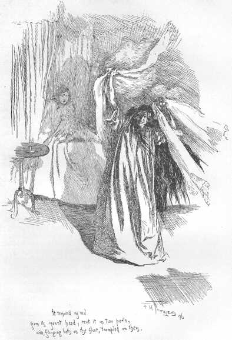

CHAPTER XXV
The month of courtship had wasted: its very last hours were being numbered. There was no putting off the day that advanced—the bridal day; and all preparations for its arrival were complete. I, at least, had nothing more to do: there were my trunks, packed, locked, corded, ranged in a row along the wall of my little chamber; to-morrow, at this time, they would be far on their road to London: and so should I (D.V.),—or rather, not I, but one Jane Rochester, a person whom as yet I knew not. The cards of address alone remained to nail on: they lay, four little squares, in the drawer. Mr. Rochester had himself written the direction, "Mrs. Rochester, --- Hotel, London," on each: I could not persuade myself to affix them, or to have them affixed. Mrs. Rochester! She did not exist: she would not be born till to-morrow, some time after eight o'clock a.m.; and I would wait to be assured she had come into the world alive before I assigned to her all that property. It was enough that in yonder closet, opposite my dressing-table, garments said to be hers had already displaced my black stuff Lowood frock and straw bonnet: for not to me appertained that suit of wedding raiment; the pearl-coloured robe, the vapoury veil pendent from the usurped portmanteau. I shut the closet to conceal the strange, wraith-like apparel it contained; which, at this evening hour—nine o'clock—gave out certainly a most ghostly shimmer through the shadow of my apartment. "I will leave you by yourself, white dream," I said. "I am feverish: I hear the wind blowing: I will go out of doors and feel it."
It was not only the hurry of preparation that made me feverish; not only the anticipation of the great change—the new life which was to commence to-morrow: both these circumstances had their share, doubtless, in producing that restless, excited mood which hurried me forth at this late hour into the darkening grounds: but a third cause influenced my mind more than they.
I had at heart a strange and anxious thought. Something had happened which I could not comprehend; no one knew of or had seen the event but myself: it had taken place the preceding night. Mr. Rochester that night was absent from home; nor was he yet returned: business had called him to a small estate of two or three farms he possessed thirty miles off—business it was requisite he should settle in person, previous to his meditated departure from England. I waited now his return; eager to disburthen my mind, and to seek of him the solution of the enigma that perplexed me. Stay till he comes, reader; and, when I disclose my secret to him, you shall share the confidence.
I sought the orchard, driven to its shelter by the wind, which all day had blown strong and full from the south, without, however, bringing a speck of rain. Instead of subsiding as night drew on, it seemed to augment its rush and deepen its roar: the trees blew steadfastly one way, never writhing round, and scarcely tossing back their boughs once in an hour; so continuous was the strain bending their branchy heads northward—the clouds drifted from pole to pole, fast following, mass on mass: no glimpse of blue sky had been visible that July day.
It was not without a certain wild pleasure I ran before the wind, delivering my trouble of mind to the measureless air-torrent thundering through space. Descending the laurel walk, I faced the wreck of the chestnut-tree; it stood up black and riven: the trunk, split down the centre, gasped ghastly. The cloven halves were not broken from each other, for the firm base and strong roots kept them unsundered below; though community of vitality was destroyed—the sap could flow no more: their great boughs on each side were dead, and next winter's tempests would be sure to fell one or both to earth: as yet, however, they might be said to form one tree—a ruin, but an entire ruin.
"You did right to hold fast to each other," I said: as if the monster-splinters were living things, and could hear me. "I think, scathed as you look, and charred and scorched, there must be a little sense of life in you yet, rising out of that adhesion at the faithful, honest roots: you will never have green leaves more—never more see birds making nests and singing idyls in your boughs; the time of pleasure and love is over with you: but you are not desolate: each of you has a comrade to sympathise with him in his decay." As I looked up at them, the moon appeared momentarily in that part of the sky which filled their fissure; her disk was blood-red and half overcast; she seemed to throw on me one bewildered, dreary glance, and buried herself again instantly in the deep drift of cloud. The wind fell, for a second, round Thornfield; but far away over wood and water, poured a wild, melancholy wail: it was sad to listen to, and I ran off again.
Here and there I strayed through the orchard, gathered up the apples with which the grass round the tree roots was thickly strewn; then I employed myself in dividing the ripe from the unripe; I carried them into the house and put them away in the store-room. Then I repaired to the library to ascertain whether the fire was lit, for, though summer, I knew on such a gloomy evening Mr. Rochester would like to see a cheerful hearth when he came in: yes, the fire had been kindled some time, and burnt well. I placed his arm-chair by the chimney-corner: I wheeled the table near it: I let down the curtain, and had the candles brought in ready for lighting. More restless than ever, when I had completed these arrangements I could not sit still, nor even remain in the house: a little time-piece in the room and the old clock in the hall simultaneously struck ten.
"How late it grows!" I said. "I will run down to the gates: it is moonlight at intervals; I can see a good way on the road. He may be coming now, and to meet him will save some minutes of suspense."
The wind roared high in the great trees which embowered the gates; but the road as far as I could see, to the right hand and the left, was all still and solitary: save for the shadows of clouds crossing it at intervals as the moon looked out, it was but a long pale line, unvaried by one moving speck.
A puerile tear dimmed my eye while I looked—a tear of disappointment and impatience; ashamed of it, I wiped it away. I lingered; the moon shut herself wholly within her chamber, and drew close her curtain of dense cloud: the night grew dark; rain came driving fast on the gale.
"I wish he would come! I wish he would come!" I exclaimed, seized with hypochondriac foreboding. I had expected his arrival before tea; now it was dark: what could keep him? Had an accident happened? The event of last night again recurred to me. I interpreted it as a warning of disaster. I feared my hopes were too bright to be realised; and I had enjoyed so much bliss lately that I imagined my fortune had passed its meridian, and must now decline.
"Well, I cannot return to the house," I thought; "I cannot sit by the fireside, while he is abroad in inclement weather: better tire my limbs than strain my heart; I will go forward and meet him."
I set out; I walked fast, but not far: ere I had measured a quarter of a mile, I heard the tramp of hoofs; a horseman came on, full gallop; a dog ran by his side. Away with evil presentiment! It was he: here he was, mounted on Mesrour, followed by Pilot. He saw me; for the moon had opened a blue field in the sky, and rode in it watery bright: he took his hat off, and waved it round his head. I now ran to meet him.
"There!" he exclaimed, as he stretched out his hand and bent from the saddle: "You can't do without me, that is evident. Step on my boot-toe; give me both hands: mount!"
I obeyed: joy made me agile: I sprang up before him. A hearty kissing I got for a welcome, and some boastful triumph, which I swallowed as well as I could. He checked himself in his exultation to demand, "But is there anything the matter, Janet, that you come to meet me at such an hour? Is there anything wrong?"
"No, but I thought you would never come. I could not bear to wait in the house for you, especially with this rain and wind."
"Rain and wind, indeed! Yes, you are dripping like a mermaid; pull my cloak round you: but I think you are feverish, Jane: both your cheek and hand are burning hot. I ask again, is there anything the matter?"
"Nothing now; I am neither afraid nor unhappy."
"Then you have been both?"
"Rather: but I'll tell you all about it by-and-bye, sir; and I daresay you will only laugh at me for my pains."
"I'll laugh at you heartily when to-morrow is past; till then I dare not: my prize is not certain. This is you, who have been as slippery as an eel this last month, and as thorny as a briar-rose? I could not lay a finger anywhere but I was pricked; and now I seem to have gathered up a stray lamb in my arms. You wandered out of the fold to seek your shepherd, did you, Jane?"
"I wanted you: but don't boast. Here we are at Thornfield: now let me get down."
He landed me on the pavement. As John took his horse, and he followed me into the hall, he told me to make haste and put something dry on, and then return to him in the library; and he stopped me, as I made for the staircase, to extort a promise that I would not be long: nor was I long; in five minutes I rejoined him. I found him at supper.
"Take a seat and bear me company, Jane: please God, it is the last meal but one you will eat at Thornfield Hall for a long time."
I sat down near him, but told him I could not eat. "Is it because you have the prospect of a journey before you, Jane? Is it the thoughts of going to London that takes away your appetite?"
"I cannot see my prospects clearly to-night, sir; and I hardly know what thoughts I have in my head. Everything in life seems unreal."
"Except me: I am substantial enough—touch me."
"You, sir, are the most phantom-like of all: you are a mere dream."
He held out his hand, laughing. "Is that a dream?" said he, placing it close to my eyes. He had a rounded, muscular, and vigorous hand, as well as a long, strong arm.
"Yes; though I touch it, it is a dream," said I, as I put it down from before my face. "Sir, have you finished supper?"
"Yes, Jane."
I rang the bell and ordered away the tray. When we were again alone, I stirred the fire, and then took a low seat at my master's knee.
"It is near midnight," I said.
"Yes: but remember, Jane, you promised to wake with me the night before my wedding."
"I did; and I will keep my promise, for an hour or two at least: I have no wish to go to bed."
"Are all your arrangements complete?"
"All, sir."
"And on my part likewise," he returned, "I have settled everything; and we shall leave Thornfield to-morrow, within half-an-hour after our return from church."
"Very well, sir."
"With what an extraordinary smile you uttered that word—'very well,' Jane! What a bright spot of colour you have on each cheek! and how strangely your eyes glitter! Are you well?"
"I believe I am."
"Believe! What is the matter? Tell me what you feel."
"I could not, sir: no words could tell you what I feel. I wish this present hour would never end: who knows with what fate the next may come charged?"
"This is hypochondria, Jane. You have been over-excited, or over-fatigued."
"Do you, sir, feel calm and happy?"
"Calm?—no: but happy—to the heart's core."
I looked up at him to read the signs of bliss in his face: it was ardent and flushed.
"Give me your confidence, Jane," he said: "relieve your mind of any weight that oppresses it, by imparting it to me. What do you fear?—that I shall not prove a good husband?"
"It is the idea farthest from my thoughts."
"Are you apprehensive of the new sphere you are about to enter?—of the new life into which you are passing?"
"No."
"You puzzle me, Jane: your look and tone of sorrowful audacity perplex and pain me. I want an explanation."
"Then, sir, listen. You were from home last night?"
"I was: I know that; and you hinted a while ago at something which had happened in my absence:—nothing, probably, of consequence; but, in short, it has disturbed you. Let me hear it. Mrs. Fairfax has said something, perhaps? or you have overheard the servants talk?—your sensitive self-respect has been wounded?"
"No, sir." It struck twelve—I waited till the time-piece had concluded its silver chime, and the clock its hoarse, vibrating stroke, and then I proceeded.
"All day yesterday I was very busy, and very happy in my ceaseless bustle; for I am not, as you seem to think, troubled by any haunting fears about the new sphere, et cetera: I think it a glorious thing to have the hope of living with you, because I love you. No, sir, don't caress me now—let me talk undisturbed. Yesterday I trusted well in Providence, and believed that events were working together for your good and mine: it was a fine day, if you recollect—the calmness of the air and sky forbade apprehensions respecting your safety or comfort on your journey. I walked a little while on the pavement after tea, thinking of you; and I beheld you in imagination so near me, I scarcely missed your actual presence. I thought of the life that lay before me—your life, sir—an existence more expansive and stirring than my own: as much more so as the depths of the sea to which the brook runs are than the shallows of its own strait channel. I wondered why moralists call this world a dreary wilderness: for me it blossomed like a rose. Just at sunset, the air turned cold and the sky cloudy: I went in, Sophie called me upstairs to look at my wedding-dress, which they had just brought; and under it in the box I found your present—the veil which, in your princely extravagance, you sent for from London: resolved, I suppose, since I would not have jewels, to cheat me into accepting something as costly. I smiled as I unfolded it, and devised how I would tease you about your aristocratic tastes, and your efforts to masque your plebeian bride in the attributes of a peeress. I thought how I would carry down to you the square of unembroidered blond I had myself prepared as a covering for my low-born head, and ask if that was not good enough for a woman who could bring her husband neither fortune, beauty, nor connections. I saw plainly how you would look; and heard your impetuous republican answers, and your haughty disavowal of any necessity on your part to augment your wealth, or elevate your standing, by marrying either a purse or a coronet."
"How well you read me, you witch!" interposed Mr. Rochester: "but what did you find in the veil besides its embroidery? Did you find poison, or a dagger, that you look so mournful now?"
"No, no, sir; besides the delicacy and richness of the fabric, I found nothing save Fairfax Rochester's pride; and that did not scare me, because I am used to the sight of the demon. But, sir, as it grew dark, the wind rose: it blew yesterday evening, not as it blows now—wild and high—but 'with a sullen, moaning sound' far more eerie. I wished you were at home. I came into this room, and the sight of the empty chair and fireless hearth chilled me. For some time after I went to bed, I could not sleep—a sense of anxious excitement distressed me. The gale still rising, seemed to my ear to muffle a mournful under-sound; whether in the house or abroad I could not at first tell, but it recurred, doubtful yet doleful at every lull; at last I made out it must be some dog howling at a distance. I was glad when it ceased. On sleeping, I continued in dreams the idea of a dark and gusty night. I continued also the wish to be with you, and experienced a strange, regretful consciousness of some barrier dividing us. During all my first sleep, I was following the windings of an unknown road; total obscurity environed me; rain pelted me; I was burdened with the charge of a little child: a very small creature, too young and feeble to walk, and which shivered in my cold arms, and wailed piteously in my ear. I thought, sir, that you were on the road a long way before me; and I strained every nerve to overtake you, and made effort on effort to utter your name and entreat you to stop—but my movements were fettered, and my voice still died away inarticulate; while you, I felt, withdrew farther and farther every moment."
"And these dreams weigh on your spirits now, Jane, when I am close to you? Little nervous subject! Forget visionary woe, and think only of real happiness! You say you love me, Janet: yes—I will not forget that; and you cannot deny it. Those words did not die inarticulate on your lips. I heard them clear and soft: a thought too solemn perhaps, but sweet as music—'I think it is a glorious thing to have the hope of living with you, Edward, because I love you.' Do you love me, Jane?—repeat it."
"I do, sir—I do, with my whole heart."
"Well," he said, after some minutes' silence, "it is strange; but that sentence has penetrated my breast painfully. Why? I think because you said it with such an earnest, religious energy, and because your upward gaze at me now is the very sublime of faith, truth, and devotion: it is too much as if some spirit were near me. Look wicked, Jane: as you know well how to look: coin one of your wild, shy, provoking smiles; tell me you hate me—tease me, vex me; do anything but move me: I would rather be incensed than saddened."
"I will tease you and vex you to your heart's content, when I have finished my tale: but hear me to the end."
"I thought, Jane, you had told me all. I thought I had found the source of your melancholy in a dream."
I shook my head. "What! is there more? But I will not believe it to be anything important. I warn you of incredulity beforehand. Go on."
The disquietude of his air, the somewhat apprehensive impatience of his manner, surprised me: but I proceeded.
"I dreamt another dream, sir: that Thornfield Hall was a dreary ruin, the retreat of bats and owls. I thought that of all the stately front nothing remained but a shell-like wall, very high and very fragile-looking. I wandered, on a moonlight night, through the grass-grown enclosure within: here I stumbled over a marble hearth, and there over a fallen fragment of cornice. Wrapped up in a shawl, I still carried the unknown little child: I might not lay it down anywhere, however tired were my arms—however much its weight impeded my progress, I must retain it. I heard the gallop of a horse at a distance on the road; I was sure it was you; and you were departing for many years and for a distant country. I climbed the thin wall with frantic perilous haste, eager to catch one glimpse of you from the top: the stones rolled from under my feet, the ivy branches I grasped gave way, the child clung round my neck in terror, and almost strangled me; at last I gained the summit. I saw you like a speck on a white track, lessening every moment. The blast blew so strong I could not stand. I sat down on the narrow ledge; I hushed the scared infant in my lap: you turned an angle of the road: I bent forward to take a last look; the wall crumbled; I was shaken; the child rolled from my knee, I lost my balance, fell, and woke."
"Now, Jane, that is all."
"All the preface, sir; the tale is yet to come. On waking, a gleam dazzled my eyes; I thought—Oh, it is daylight! But I was mistaken; it was only candlelight. Sophie, I supposed, had come in. There was a light in the dressing-table, and the door of the closet, where, before going to bed, I had hung my wedding-dress and veil, stood open; I heard a rustling there. I asked, 'Sophie, what are you doing?' No one answered; but a form emerged from the closet; it took the light, held it aloft, and surveyed the garments pendent from the portmanteau. 'Sophie! Sophie!' I again cried: and still it was silent. I had risen up in bed, I bent forward: first surprise, then bewilderment, came over me; and then my blood crept cold through my veins. Mr. Rochester, this was not Sophie, it was not Leah, it was not Mrs. Fairfax: it was not—no, I was sure of it, and am still—it was not even that strange woman, Grace Poole."
"It must have been one of them," interrupted my master.
"No, sir, I solemnly assure you to the contrary. The shape standing before me had never crossed my eyes within the precincts of Thornfield Hall before; the height, the contour were new to me."
"Describe it, Jane."
"It seemed, sir, a woman, tall and large, with thick and dark hair hanging long down her back. I know not what dress she had on: it was white and straight; but whether gown, sheet, or shroud, I cannot tell."
"Did you see her face?"
"Not at first. But presently she took my veil from its place; she held it up, gazed at it long, and then she threw it over her own head, and turned to the mirror. At that moment I saw the reflection of the visage and features quite distinctly in the dark oblong glass."
"And how were they?"
"Fearful and ghastly to me—oh, sir, I never saw a face like it! It was a discoloured face—it was a savage face. I wish I could forget the roll of the red eyes and the fearful blackened inflation of the lineaments!"
"Ghosts are usually pale, Jane."
"This, sir, was purple: the lips were swelled and dark; the brow furrowed: the black eyebrows widely raised over the bloodshot eyes. Shall I tell you of what it reminded me?"
"You may."
"Of the foul German spectre—the Vampyre."
"Ah!—what did it do?"
"Sir, it removed my veil from its gaunt head, rent it in two parts, and flinging both on the floor, trampled on them."

"Afterwards?"
"It drew aside the window-curtain and looked out; perhaps it saw dawn approaching, for, taking the candle, it retreated to the door. Just at my bedside, the figure stopped: the fiery eyes glared upon me—she thrust up her candle close to my face, and extinguished it under my eyes. I was aware her lurid visage flamed over mine, and I lost consciousness: for the second time in my life—only the second time—I became insensible from terror."
"Who was with you when you revived?"
"No one, sir, but the broad day. I rose, bathed my head and face in water, drank a long draught; felt that though enfeebled I was not ill, and determined that to none but you would I impart this vision. Now, sir, tell me who and what that woman was?"
"The creature of an over-stimulated brain; that is certain. I must be careful of you, my treasure: nerves like yours were not made for rough handling."
"Sir, depend on it, my nerves were not in fault; the thing was real: the transaction actually took place."
"And your previous dreams, were they real too? Is Thornfield Hall a ruin? Am I severed from you by insuperable obstacles? Am I leaving you without a tear—without a kiss—without a word?"
"Not yet."
"Am I about to do it? Why, the day is already commenced which is to bind us indissolubly; and when we are once united, there shall be no recurrence of these mental terrors: I guarantee that."
"Mental terrors, sir! I wish I could believe them to be only such: I wish it more now than ever; since even you cannot explain to me the mystery of that awful visitant."
"And since I cannot do it, Jane, it must have been unreal."
"But, sir, when I said so to myself on rising this morning, and when I looked round the room to gather courage and comfort from the cheerful aspect of each familiar object in full daylight, there—on the carpet—I saw what gave the distinct lie to my hypothesis,—the veil, torn from top to bottom in two halves!"
"Impatiently I waited for evening, when I might summon you to my presence. An unusual—to me—a perfectly new character I suspected was yours: I desired to search it deeper and know it better. You entered the room with a look and air at once shy and independent: you were quaintly dressed—much as you are now. I made you talk: ere long I found you full of strange contrasts. Your garb and manner were restricted by rule; your air was often diffident, and altogether that of one refined by nature, but absolutely unused to society, and a good deal afraid of making herself disadvantageously conspicuous by some solecism or blunder; yet when addressed, you lifted a keen, a daring, and a glowing eye to your interlocutor's face: there was penetration and power in each glance you gave; when plied by close questions, you found ready and round answers. Very soon you seemed to get used to me: I believe you felt the existence of sympathy between you and your grim and cross master, Jane; for it was astonishing to see how quickly a certain pleasant ease tranquillised your manner: snarl as I would, you showed no surprise, fear, annoyance, or displeasure at my moroseness; you watched me, and now and then smiled at me with a simple yet sagacious grace I cannot describe. I was at once content and stimulated with what I saw: I liked what I had seen, and wished to see more. Yet, for a long time, I treated you distantly, and sought your company rarely. I was an intellectual epicure, and wished to prolong the gratification of making this novel and piquant acquaintance: besides, I was for a while troubled with a haunting fear that if I handled the flower freely its bloom would fade—the sweet charm of freshness would leave it. I did not then know that it was no transitory blossom, but rather the radiant resemblance of one, cut in an indestructible gem. Moreover, I wished to see whether you would seek me if I shunned you—but you did not; you kept in the schoolroom as still as your own desk and easel; if by chance I met you, you passed me as soon, and with as little token of recognition, as was consistent with respect. Your habitual expression in those days, Jane, was a thoughtful look; not despondent, for you were not sickly; but not buoyant, for you had little hope, and no actual pleasure. I wondered what you thought of me, or if you ever thought of me, and resolved to find this out.
"I resumed my notice of you. There was something glad in your glance, and genial in your manner, when you conversed: I saw you had a social heart; it was the silent schoolroom—it was the tedium of your life—that made you mournful. I permitted myself the delight of being kind to you; kindness stirred emotion soon: your face became soft in expression, your tones gentle; I liked my name pronounced by your lips in a grateful happy accent. I used to enjoy a chance meeting with you, Jane, at this time: there was a curious hesitation in your manner: you glanced at me with a slight trouble—a hovering doubt: you did not know what my caprice might be—whether I was going to play the master and be stern, or the friend and be benignant. I was now too fond of you often to simulate the first whim; and, when I stretched my hand out cordially, such bloom and light and bliss rose to your young, wistful features, I had much ado often to avoid straining you then and there to my heart."
"Don't talk any more of those days, sir," I interrupted, furtively dashing away some tears from my eyes; his language was torture to me; for I knew what I must do—and do soon—and all these reminiscences, and these revelations of his feelings only made my work more difficult.
"No, Jane," he returned: "what necessity is there to dwell on the Past, when the Present is so much surer—the Future so much brighter?"
I shuddered to hear the infatuated assertion.
"You see now how the case stands—do you not?" he continued. "After a youth and manhood passed half in unutterable misery and half in dreary solitude, I have for the first time found what I can truly love—I have found you. You are my sympathy—my better self—my good angel. I am bound to you with a strong attachment. I think you good, gifted, lovely: a fervent, a solemn passion is conceived in my heart; it leans to you, draws you to my centre and spring of life, wraps my existence about you, and, kindling in pure, powerful flame, fuses you and me in one.
"It was because I felt and knew this, that I resolved to marry you. To tell me that I had already a wife is empty mockery: you know now that I had but a hideous demon. I was wrong to attempt to deceive you; but I feared a stubbornness that exists in your character. I feared early instilled prejudice: I wanted to have you safe before hazarding confidences. This was cowardly: I should have appealed to your nobleness and magnanimity at first, as I do now—opened to you plainly my life of agony—described to you my hunger and thirst after a higher and worthier existence—shown to you, not my resolution (that word is weak), but my resistless bent to love faithfully and well, where I am faithfully and well loved in return. Then I should have asked you to accept my pledge of fidelity and to give me yours. Jane—give it me now."
A pause.
"Why are you silent, Jane?"
I was experiencing an ordeal: a hand of fiery iron grasped my vitals. Terrible moment: full of struggle, blackness, burning! Not a human being that ever lived could wish to be loved better than I was loved; and him who thus loved me I absolutely worshipped: and I must renounce love and idol. One drear word comprised my intolerable duty—"Depart!"
"Jane, you understand what I want of you? Just this promise—'I will be yours, Mr. Rochester.'"
"Mr. Rochester, I will not be yours."
Another long silence.
"Jane!" recommenced he, with a gentleness that broke me down with grief, and turned me stone-cold with ominous terror—for this still voice was the pant of a lion rising—"Jane, do you mean to go one way in the world, and to let me go another?"
"I do."
"Jane" (bending towards and embracing me), "do you mean it now?"
"I do."
"And now?" softly kissing my forehead and cheek.
"I do," extricating myself from restraint rapidly and completely.
"Oh, Jane, this is bitter! This—this is wicked. It would not be wicked to love me."
"It would to obey you."
A wild look raised his brows—crossed his features: he rose; but he forebore yet. I laid my hand on the back of a chair for support: I shook, I feared—but I resolved.
"One instant, Jane. Give one glance to my horrible life when you are gone. All happiness will be torn away with you. What then is left? For a wife I have but the maniac upstairs: as well might you refer me to some corpse in yonder churchyard. What shall I do, Jane? Where turn for a companion and for some hope?"
"Do as I do: trust in God and yourself. Believe in heaven. Hope to meet again there."
"Then you will not yield?"
"No."
"Then you condemn me to live wretched and to die accursed?" His voice rose.
"I advise you to live sinless, and I wish you to die tranquil."
"Then you snatch love and innocence from me? You fling me back on lust for a passion—vice for an occupation?"
"Mr. Rochester, I no more assign this fate to you than I grasp at it for myself. We were born to strive and endure—you as well as I: do so. You will forget me before I forget you."
"You make me a liar by such language: you sully my honour. I declared I could not change: you tell me to my face I shall change soon. And what a distortion in your judgment, what a perversity in your ideas, is proved by your conduct! Is it better to drive a fellow-creature to despair than to transgress a mere human law, no man being injured by the breach? for you have neither relatives nor acquaintances whom you need fear to offend by living with me?"
This was true: and while he spoke my very conscience and reason turned traitors against me, and charged me with crime in resisting him. They spoke almost as loud as Feeling: and that clamoured wildly. "Oh, comply!" it said. "Think of his misery; think of his danger—look at his state when left alone; remember his headlong nature; consider the recklessness following on despair—soothe him; save him; love him; tell him you love him and will be his. Who in the world cares for you? or who will be injured by what you do?"
Still indomitable was the reply—"I care for myself. The more solitary, the more friendless, the more unsustained I am, the more I will respect myself. I will keep the law given by God; sanctioned by man. I will hold to the principles received by me when I was sane, and not mad—as I am now. Laws and principles are not for the times when there is no temptation: they are for such moments as this, when body and soul rise in mutiny against their rigour; stringent are they; inviolate they shall be. If at my individual convenience I might break them, what would be their worth? They have a worth—so I have always believed; and if I cannot believe it now, it is because I am insane—quite insane: with my veins running fire, and my heart beating faster than I can count its throbs. Preconceived opinions, foregone determinations, are all I have at this hour to stand by: there I plant my foot."
I did. Mr. Rochester, reading my countenance, saw I had done so. His fury was wrought to the highest: he must yield to it for a moment, whatever followed; he crossed the floor and seized my arm and grasped my waist. He seemed to devour me with his flaming glance: physically, I felt, at the moment, powerless as stubble exposed to the draught and glow of a furnace: mentally, I still possessed my soul, and with it the certainty of ultimate safety. The soul, fortunately, has an interpreter—often an unconscious, but still a truthful interpreter—in the eye. My eye rose to his; and while I looked in his fierce face I gave an involuntary sigh; his gripe was painful, and my over-taxed strength almost exhausted.
"Never," said he, as he ground his teeth, "never was anything at once so frail and so indomitable. A mere reed she feels in my hand!" (And he shook me with the force of his hold.) "I could bend her with my finger and thumb: and what good would it do if I bent, if I uptore, if I crushed her? Consider that eye: consider the resolute, wild, free thing looking out of it, defying me, with more than courage—with a stern triumph. Whatever I do with its cage, I cannot get at it—the savage, beautiful creature! If I tear, if I rend the slight prison, my outrage will only let the captive loose. Conqueror I might be of the house; but the inmate would escape to heaven before I could call myself possessor of its clay dwelling-place. And it is you, spirit—with will and energy, and virtue and purity—that I want: not alone your brittle frame. Of yourself you could come with soft flight and nestle against my heart, if you would: seized against your will, you will elude the grasp like an essence—you will vanish ere I inhale your fragrance. Oh! come, Jane, come!"
As he said this, he released me from his clutch, and only looked at me. The look was far worse to resist than the frantic strain: only an idiot, however, would have succumbed now. I had dared and baffled his fury; I must elude his sorrow: I retired to the door.
"You are going, Jane?"
"I am going, sir."
"You are leaving me?"
"Yes."
"You will not come? You will not be my comforter, my rescuer? My deep love, my wild woe, my frantic prayer, are all nothing to you?"
What unutterable pathos was in his voice! How hard it was to reiterate firmly, "I am going."
"Jane!"
"Mr. Rochester!"
"Withdraw, then,—I consent; but remember, you leave me here in anguish. Go up to your own room; think over all I have said, and, Jane, cast a glance on my sufferings—think of me."
He turned away; he threw himself on his face on the sofa. "Oh, Jane! my hope—my love—my life!" broke in anguish from his lips. Then came a deep, strong sob.
I had already gained the door; but, reader, I walked back—walked back as determinedly as I had retreated. I knelt down by him; I turned his face from the cushion to me; I kissed his cheek; I smoothed his hair with my hand.
"God bless you, my dear master!" I said. "God keep you from harm and wrong—direct you, solace you—reward you well for your past kindness to me."
"Little Jane's love would have been my best reward," he answered; "without it, my heart is broken. But Jane will give me her love: yes—nobly, generously."
Up the blood rushed to his face; forth flashed the fire from his eyes; erect he sprang; he held his arms out; but I evaded the embrace, and at once quitted the room.
"Farewell!" was the cry of my heart as I left him. Despair added, "Farewell for ever!"
* * * * *
That night I never thought to sleep; but a slumber fell on me as soon as I lay down in bed. I was transported in thought to the scenes of childhood: I dreamt I lay in the red-room at Gateshead; that the night was dark, and my mind impressed with strange fears. The light that long ago had struck me into syncope, recalled in this vision, seemed glidingly to mount the wall, and tremblingly to pause in the centre of the obscured ceiling. I lifted up my head to look: the roof resolved to clouds, high and dim; the gleam was such as the moon imparts to vapours she is about to sever. I watched her come—watched with the strangest anticipation; as though some word of doom were to be written on her disk. She broke forth as never moon yet burst from cloud: a hand first penetrated the sable folds and waved them away; then, not a moon, but a white human form shone in the azure, inclining a glorious brow earthward. It gazed and gazed on me. It spoke to my spirit: immeasurably distant was the tone, yet so near, it whispered in my heart—
"My daughter, flee temptation."
"Mother, I will."
So I answered after I had waked from the trance-like dream. It was yet night, but July nights are short: soon after midnight, dawn comes. "It cannot be too early to commence the task I have to fulfil," thought I. I rose: I was dressed; for I had taken off nothing but my shoes. I knew where to find in my drawers some linen, a locket, a ring. In seeking these articles, I encountered the beads of a pearl necklace Mr. Rochester had forced me to accept a few days ago. I left that; it was not mine: it was the visionary bride's who had melted in air. The other articles I made up in a parcel; my purse, containing twenty shillings (it was all I had), I put in my pocket: I tied on my straw bonnet, pinned my shawl, took the parcel and my slippers, which I would not put on yet, and stole from my room.
"Farewell, kind Mrs. Fairfax!" I whispered, as I glided past her door. "Farewell, my darling Adèle!" I said, as I glanced towards the nursery. No thought could be admitted of entering to embrace her. I had to deceive a fine ear: for aught I knew it might now be listening.
I would have got past Mr. Rochester's chamber without a pause; but my heart momentarily stopping its beat at that threshold, my foot was forced to stop also. No sleep was there: the inmate was walking restlessly from wall to wall; and again and again he sighed while I listened. There was a heaven—a temporary heaven—in this room for me, if I chose: I had but to go in and to say—
"Mr. Rochester, I will love you and live with you through life till death," and a fount of rapture would spring to my lips. I thought of this.
That kind master, who could not sleep now, was waiting with impatience for day. He would send for me in the morning; I should be gone. He would have me sought for: vainly. He would feel himself forsaken; his love rejected: he would suffer; perhaps grow desperate. I thought of this too. My hand moved towards the lock: I caught it back, and glided on.
Drearily I wound my way downstairs: I knew what I had to do, and I did it mechanically. I sought the key of the side-door in the kitchen; I sought, too, a phial of oil and a feather; I oiled the key and the lock. I got some water, I got some bread: for perhaps I should have to walk far; and my strength, sorely shaken of late, must not break down. All this I did without one sound. I opened the door, passed out, shut it softly. Dim dawn glimmered in the yard. The great gates were closed and locked; but a wicket in one of them was only latched. Through that I departed: it, too, I shut; and now I was out of Thornfield.
A mile off, beyond the fields, lay a road which stretched in the contrary direction to Millcote; a road I had never travelled, but often noticed, and wondered where it led: thither I bent my steps. No reflection was to be allowed now: not one glance was to be cast back; not even one forward. Not one thought was to be given either to the past or the future. The first was a page so heavenly sweet—so deadly sad—that to read one line of it would dissolve my courage and break down my energy. The last was an awful blank: something like the world when the deluge was gone by.
I skirted fields, and hedges, and lanes till after sunrise. I believe it was a lovely summer morning: I know my shoes, which I had put on when I left the house, were soon wet with dew. But I looked neither to rising sun, nor smiling sky, nor wakening nature. He who is taken out to pass through a fair scene to the scaffold, thinks not of the flowers that smile on his road, but of the block and axe-edge; of the disseverment of bone and vein; of the grave gaping at the end: and I thought of drear flight and homeless wandering—and oh! with agony I thought of what I left. I could not help it. I thought of him now—in his room—watching the sunrise; hoping I should soon come to say I would stay with him and be his. I longed to be his; I panted to return: it was not too late; I could yet spare him the bitter pang of bereavement. As yet my flight, I was sure, was undiscovered. I could go back and be his comforter—his pride; his redeemer from misery, perhaps from ruin. Oh, that fear of his self-abandonment—far worse than my abandonment—how it goaded me! It was a barbed arrow-head in my breast; it tore me when I tried to extract it; it sickened me when remembrance thrust it farther in. Birds began singing in brake and copse: birds were faithful to their mates; birds were emblems of love. What was I? In the midst of my pain of heart and frantic effort of principle, I abhorred myself. I had no solace from self-approbation: none even from self-respect. I had injured—wounded—left my master. I was hateful in my own eyes. Still I could not turn, nor retrace one step. God must have led me on. As to my own will or conscience, impassioned grief had trampled one and stifled the other. I was weeping wildly as I walked along my solitary way: fast, fast I went like one delirious. A weakness, beginning inwardly, extending to the limbs, seized me, and I fell: I lay on the ground some minutes, pressing my face to the wet turf. I had some fear—or hope—that here I should die: but I was soon up; crawling forwards on my hands and knees, and then again raised to my feet—as eager and as determined as ever to reach the road.
When I got there, I was forced to sit to rest me under the hedge; and while I sat, I heard wheels, and saw a coach come on. I stood up and lifted my hand; it stopped. I asked where it was going: the driver named a place a long way off, and where I was sure Mr. Rochester had no connections. I asked for what sum he would take me there; he said thirty shillings; I answered I had but twenty; well, he would try to make it do. He further gave me leave to get into the inside, as the vehicle was empty: I entered, was shut in, and it rolled on its way.
Gentle reader, may you never feel what I then felt! May your eyes never shed such stormy, scalding, heart-wrung tears as poured from mine. May you never appeal to Heaven in prayers so hopeless and so agonised as in that hour left my lips; for never may you, like me, dread to be the instrument of evil to what you wholly love.